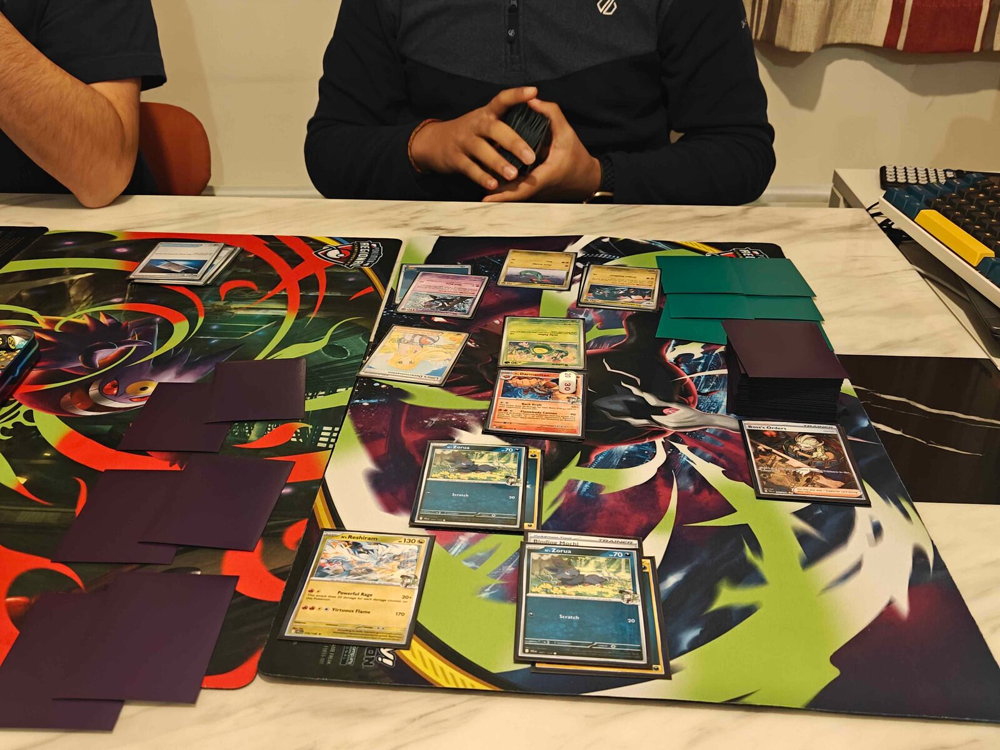

I main N's Zoroark in Pokémon TCG. It's a fine deck. It's also a deck that half the room is playing (well like 9%?), and I wanted a second one that wasn't. Something I could pull out that nobody had a plan for, and that wasn't just whatever was on Limitless's homepage.

So I did what any reasonable person would do. I went on Limitless and Reddit, found nothing that excited me, and then over one very long night and the following afternoon spiralled into reading every card in the format, building a game simulator, and attempting to train a neural network to play Pokémon.
This is how that went. Spoiler: I did not find it. But Mega Darkrai might just be my participation prize.
Step One: Read Every Card
The first plan was simple. Standard right now is regulation marks H, I and J, with the newest set, Delta Reign, only a couple of weeks old. I pulled every card in rotation, text only, no pictures: about 2,300 distinct cards. Then I pulled the last 30 days of tournament results with public decklists, which gave me roughly 5,000 lists from after Delta Reign dropped.
Then I read all of it. Every Pokémon's attacks and abilities, with notes, looking for an engine that was busted but underused. Something where the meta's weaknesses lined up with a card nobody was running. A few facts about the field fell out of that:
- 92% of lists run three or more different ability Pokémon.
- The biggest ex in a list has 280 HP or less in about a quarter of lists, so there's a lot of room to one-shot things.
- Roughly one in eight lists runs Watchtower, and about one in eight runs Mist Energy.
The shortlist was Slaking ex, a Cofagrigus package that stacks damage counters on everything, and a handful of other weird Pokémon.
Step Two: The Meta Hits Back
Every one of those ideas died in the same way: somebody's already in the format who just wrecks it.
Slaking ex loses to Festival Lead, because Born to Slack stops it from attacking if the opponent isn't playing an ex, and Festival Lead can just... not do that. I REALLY hate Festival Lead.
Mega Dragalge ex is the deck I liked most, a status-condition deck where poison and burn do the work. Then I checked what the field actually runs:
- Every Festival Lead list runs Festival Grounds, which cures all Special Conditions.
- Every Basic Box list runs Latias ex, which makes Basic Pokémon retreat for free (a free status cure), and Lillie's Clefairy ex, whose Fairy Zone flips Dragalge's weakness to a Psychic ×2.
- Fairy Zone also shows up in Slowking, Dhelmise and some Alakazam and Lopunny lists.
That's somewhere around 27–33% of the meta that either cures or punishes the deck for existing.
Incineroar ex was the next favourite. It sets up fast on paper (about 65–73% by turn 3 in my goldfish tests), but its ability is on an Evolution, and 87% of Mega Rayquaza lists run Legendary Pyroduct, which switches it off. Also, there were zero Incineroar ex lists in 5,099. Zero. I'd hoped I was the first one to notice it. I was apparently the first one to ignore that nobody else had.
Cofagrigus I really liked. Then it turned out that putting 60 damage counters on the opposing Active also works on my own Munkidori, because Munkidori has an Ability. Whoops. And across 15,171 real lists, Cofagrigus appeared as a 1-of in 47 Slowking lists and not once as a deck.
Step Three: Just Build a Simulator, How Hard Can It Be
If I couldn't trust my own reading, I figured I'd test the decks. A quick Python simulator, validate it against real matchup data, then run my niche decks through it.
It did not match reality. Against real Limitless results:
- Dragapult mirror: 49% real, 47–56% in the sim. Fine.
- Dragapult vs Festival Lead: 63–73% real, 74–89% in the sim. Not fine.
- Mega Rayquaza vs Festival Lead: 47% real, 90% in the sim. Very much not fine.
I rewrote the AI. I rewrote the engine in C++ to make it fast: all 1,872 attacks, 331 abilities and 242 trainers/tools/stadiums, fuzz-tested over about 250,000 random games for crashes and cards vanishing. I then built a real-match backtest, 14,829 actual tournament matches with both exact 60-card lists and the winner, and asked a simple question: Does the simulator pick the real winner?
It picked the winner 54.4% of the time on the first test, and the rule-based pilot later dropped to about 39%, which is below a coin flip. That's the "you built a very elaborate way to be wrong" result.
Step Four: The Chess Engine
At this point I pivoted again. Forget predicting matchups; build the Stockfish of Pokémon TCG, a bot that just plays the best move given its deck. I wanted a human-level bot. I researched the best machine learning techniques, adapted to the actual mechanics of the game.
What came out of that:
- A small transformer (about 253k parameters) that sees every Pokémon in play as a token, along with hand, discard piles, and the full decklist.
- A belief model for hidden information, which weights real decklists consistent with what the opponent has shown and samples their hand and prizes from them. (My first search version quietly cheated by peeking at the opponent's real deck. I caught it and replaced it with sampling. Strength dropped from 76.5% to 74.4% against the old bot, which is what honesty costs.)
- Self-play training on about 1.08 million positions from ~13,000 games.
The result: on held-out games the network agrees with its teacher search about 65% of the time, and the early version beat the rule-based bot 65% (±10, with only 80 games). That's promising, but agreement with a teacher measures copying, so if the teacher is stupid then so is the student. I never played the final network head-to-head.
It also used about 7.5 GB of disk, almost all training data, and made my laptop fan sound like a jet engine.
So What Did I Actually Learn?
1. Real data beats clever analysis. The one deck with real evidence behind it wasn't any of my ideas. It was Rocket's Honchkrow: 52.9% win rate across 534 matches while only 1.8% of the field plays it. Better, lists with 7 or more games win 56.1% of the time. Okidogi Barbaracle (54.7%) and Crustle (53.2%) also look decent. That's a thing a spreadsheet told me for free in the first hour of this maddening spiral, and I walked straight past it to go do whatever it is I did.
2. "Niche" is a state of the market, not a property of a deck. If something's genuinely good and underplayed, it's usually underplayed because it's hard to pilot, has a catastrophic matchup against something common, or both. Honchkrow's matchup table is a perfect example: 80% into Excadrill and Crustle, 71% into Zoroark, but 33% into Talonflame Dusknoir, and its pilot has to hold Supporters for Rocket Feathers, which is exactly what my simulator's AI couldn't do.
3. Be suspicious of your own tools. The simulator said Honchkrow was bad (32%). The real data said 53%. If I'd trusted the simulator, I'd have thrown away the one good lead. The hardest part of the whole project was admitting, several times, that the thing I'd just spent hours on wasn't good enough to decide anything and was, in fact, rather useless.
4. You can have fun and still be doing the wrong thing. I don't regret it. Reading every card taught me the format far better than watching streams did, and I now know exactly why Latias is in everything. But if the goal was "pick a deck", I could have done it in an evening.
Where It Ended Up
I did, however, end up with something of an idea for a good second deck I could try: Mega Darkrai ex. It's a status deck, similar to Mega Dragalge ex, but a lot more stable and reliable, and it's not straight up useless! Well, at least I think so. I'm using a weird mashup of decks from this one Japanese website and just playing it against other decks by myself to see how well it plays. And to be honest, it's still kinda doodoo.
The simulator is still there. The network is still half-trained. And Zoroark is still my main. And I lost years off my life, but at least I now know why no one plays Cofagrigus.
Loading comments…